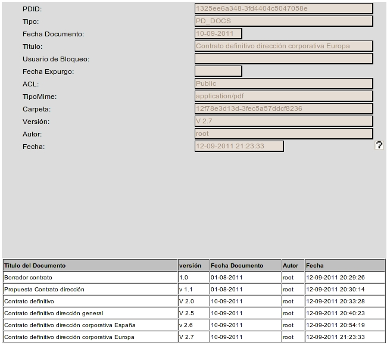

Al seleccionar la opción de menú Documento - Lista de versiones, aparecerá la lista de versiones del documento seleccionado actualmente.
Seleccionando cualquiera de las versiones del documento de la lista, se podrá ver en la parte superior los valores asignados a los metadatos del documento en esa versión. Pulsando sobre el título, puede verse el archivo asociado a esa versión concreta.
La tabla de resultados muestra los datos:

En la versión de cliente Swing, esa tabla de resultados puede ordenarse seleccionando la cabecera de cada columna. Puede también cambiarse el tamaño de cada columna arrastrando la línea separadora de las cabeceras
Ver: CheckIn (Bloquear Documento para editar), CheckOut (Confirmar cambios en Documento Bloqueado) y Cancel Checkout (Cancelar Cambios en Documento)